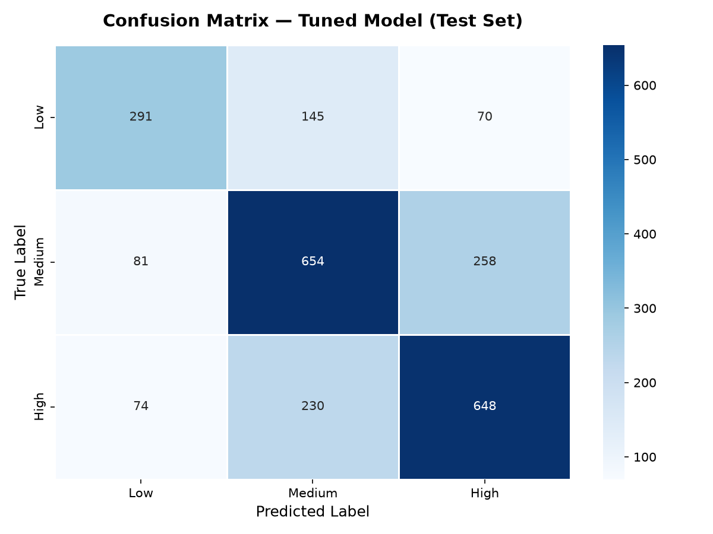

Automating customer support triage with a Bidirectional LSTM deep learning model
Agents manually read and categorise every ticket before routing it — a process that scales poorly as volume grows.
Two agents looking at the same ticket often assign different priority levels, breaking SLA consistency.
Urgent issues regularly sit in the queue for hours before reaching the right engineer.
Round-the-clock support needs round-the-clock human staffing just to keep up with triage volume.
As ticket volume grows, so does headcount cost — the problem gets worse, not better, over time.
/predict REST endpointBilingual dataset (EN/DE) — filtered to English only (16,338 of 28,587 rows)
Classes are imbalanced (Low 21% / Medium 41% / High 39%) — class weights used in training
Vocabulary size after cleaning: 5,726 tokens
Dataset is bilingual (EN/DE) — step 2 filters to English only, since the model is trained on a single language.
At every token, the model has both past context (→) and future context (←) — the word "twice" carries much more weight when the model already knows the sentence ends with "no access".

Applied after the Bi-LSTM layer. During training, 30% of units are randomly zeroed per batch, forcing the network to learn redundant representations rather than memorising training examples.
Training monitors validation loss after each epoch. If it fails to improve for a set patience window, training stops automatically — preventing the model from continuing to memorise training data after generalisation peaks.
Train/Val/Test sets are split with stratification on the priority label, ensuring each split has the same class distribution. This prevents accidentally validating on an easy subset and gives honest generalisation estimates.
POST /predict endpointsubject + bodyReal-time support ticket classification — <1 second